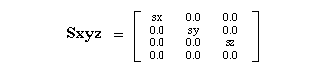

Return to previous page | Return to menu | Go to next page
void
Matrix function
Scaling the current matrix
void slScale(sx , sy , sz)
FIXED sx ;
FIXED sy ;
FIXED sz ;
sx X-axis scaling factor sy Scale in the Y-axis direction sz Z-axis scaling factor
Multiply the current matrix by the scaling matrix.
The scaling matrix is represented as shown below.
None

Note) sx, sy, sz are parameter substitution values.
Reference: Chapter 4 Coordinate transformation
slScale